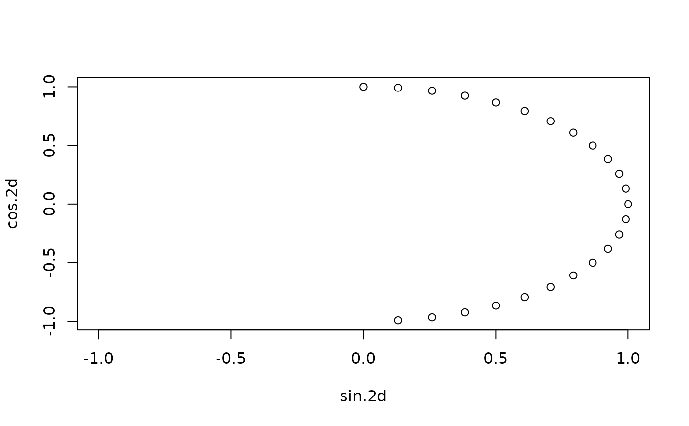
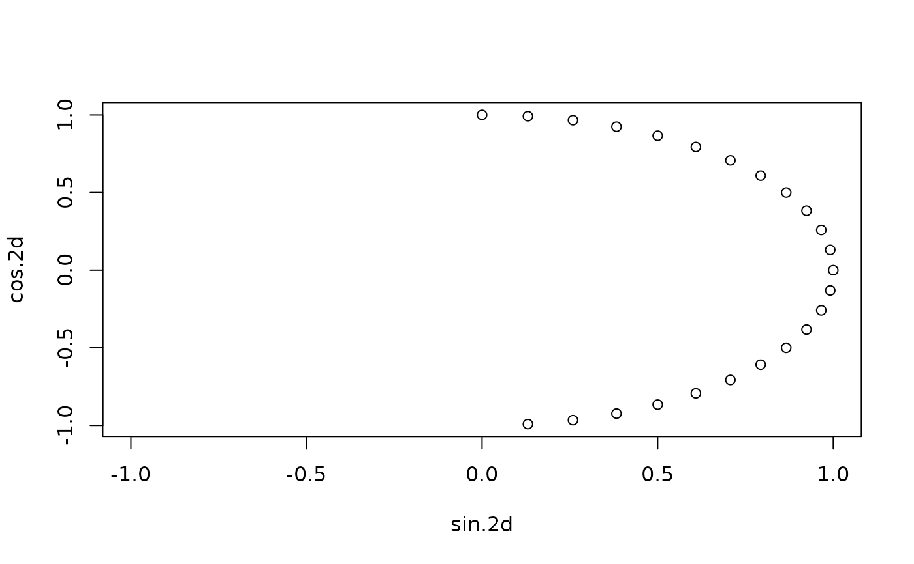

Encode a date-time object into a cyclic coordinate system in which the distances between two pairs of dates separated by the same time duration are the same.
Arguments
- x
a date-time object
- periods
a character vector of periods. Follows same specification as period and floor_date functions.
- encoders
names of functions to produce the encoding. Defaults to "sin" and "cos". Names of any predefined functions accepting a numeric input are allowed.
- week_start
week start day (Default is 7, Sunday. Set
lubridate.week.startto override). Full or abbreviated names of the days of the week can be in English or as provided by the current locale.
Details
Machine learning models don't know that December 31st and January 1st are
close in our human calendar sense. cyclic_encoding makes it obvious to the
machine learner that two calendar dates are close by mapping the dates onto
the circle.
Examples
times <- ymd_hms("2019-01-01 00:00:00") + hours(0:23)
cyclic_encoding(times, c("day", "week", "month"))
#> sin.day cos.day sin.week cos.week sin.month
#> [1,] 0.000000e+00 1.000000e+00 0.9749279 -0.2225209 0.000000000
#> [2,] 2.588190e-01 9.659258e-01 0.9659258 -0.2588190 0.008445041
#> [3,] 5.000000e-01 8.660254e-01 0.9555728 -0.2947552 0.016889480
#> [4,] 7.071068e-01 7.071068e-01 0.9438833 -0.3302791 0.025332714
#> [5,] 8.660254e-01 5.000000e-01 0.9308737 -0.3653410 0.033774142
#> [6,] 9.659258e-01 2.588190e-01 0.9165623 -0.3998920 0.042213161
#> [7,] 1.000000e+00 -1.608123e-16 0.9009689 -0.4338837 0.050649169
#> [8,] 9.659258e-01 -2.588190e-01 0.8841154 -0.4672686 0.059081565
#> [9,] 8.660254e-01 -5.000000e-01 0.8660254 -0.5000000 0.067509747
#> [10,] 7.071068e-01 -7.071068e-01 0.8467242 -0.5320321 0.075933114
#> [11,] 5.000000e-01 -8.660254e-01 0.8262388 -0.5633201 0.084351066
#> [12,] 2.588190e-01 -9.659258e-01 0.8045978 -0.5938202 0.092763002
#> [13,] -3.216245e-16 -1.000000e+00 0.7818315 -0.6234898 0.101168322
#> [14,] -2.588190e-01 -9.659258e-01 0.7579717 -0.6522874 0.109566427
#> [15,] -5.000000e-01 -8.660254e-01 0.7330519 -0.6801727 0.117956717
#> [16,] -7.071068e-01 -7.071068e-01 0.7071068 -0.7071068 0.126338595
#> [17,] -8.660254e-01 -5.000000e-01 0.6801727 -0.7330519 0.134711462
#> [18,] -9.659258e-01 -2.588190e-01 0.6522874 -0.7579717 0.143074722
#> [19,] -1.000000e+00 -1.836970e-16 0.6234898 -0.7818315 0.151427778
#> [20,] -9.659258e-01 2.588190e-01 0.5938202 -0.8045978 0.159770033
#> [21,] -8.660254e-01 5.000000e-01 0.5633201 -0.8262388 0.168100894
#> [22,] -7.071068e-01 7.071068e-01 0.5320321 -0.8467242 0.176419766
#> [23,] -5.000000e-01 8.660254e-01 0.5000000 -0.8660254 0.184726056
#> [24,] -2.588190e-01 9.659258e-01 0.4672686 -0.8841154 0.193019171
#> cos.month
#> [1,] 1.0000000
#> [2,] 0.9999643
#> [3,] 0.9998574
#> [4,] 0.9996791
#> [5,] 0.9994295
#> [6,] 0.9991086
#> [7,] 0.9987165
#> [8,] 0.9982532
#> [9,] 0.9977186
#> [10,] 0.9971129
#> [11,] 0.9964361
#> [12,] 0.9956882
#> [13,] 0.9948693
#> [14,] 0.9939795
#> [15,] 0.9930187
#> [16,] 0.9919872
#> [17,] 0.9908849
#> [18,] 0.9897119
#> [19,] 0.9884683
#> [20,] 0.9871543
#> [21,] 0.9857698
#> [22,] 0.9843150
#> [23,] 0.9827901
#> [24,] 0.9811950
plot(cyclic_encoding(times, "1d"))
 plot(cyclic_encoding(times, "2d"), xlim = c(-1, 1))

plot(cyclic_encoding(times, "4d"), xlim = c(-1, 1))
plot(cyclic_encoding(times, "2d"), xlim = c(-1, 1))

plot(cyclic_encoding(times, "4d"), xlim = c(-1, 1))